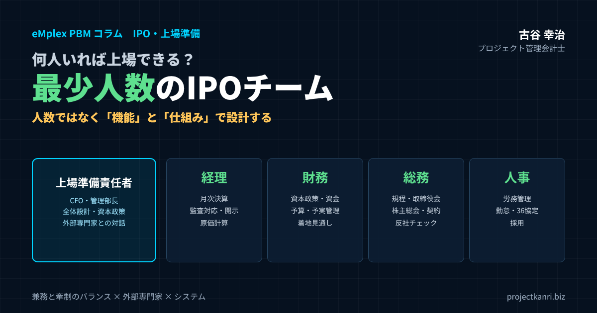

最少人数のIPOチームとは？経理・財務・総務・人事を何人で回すか―上場準備の管理部門の体制、段階別の人員構成、兼務の組み合わせと職務分離、外部専門家とシステムの活用、採用の順番まで

結論：IPOチームは「人数」ではなく「機能」と「仕組み」で設計する
この記事のポイント
- IPOチームは人数ではなく「機能」と「仕組み」で設計する
- 3原則：機能で考える／兼務と牽制のバランス／外部専門家とシステムで人の仕事を減らす
- 経理は最低2人。内部監査は自己監査にならないよう設計
- 段階に合わせて人員を整える（N-3期 2〜3人 → N期 5〜6人が一つの目安）
- 最大のリスクは属人化。手順書・主副担当・情報の共有で防ぐ
プロジェクト管理会計士の古谷です。上場を目指す会社の経営者から、よくいただく質問があります。「管理部門は何人いれば上場できますか」という質問です。
正直にお答えすると、何人いれば上場できる、という決まった数字はありません。会社の規模、事業の複雑さ、取引の量、目指す市場、そして外部の専門家やシステムをどれだけ活用するかによって、必要な人数は大きく変わります。ただし、確かに言えることがあります。人数の多さよりも、必要な機能が漏れなく担われているか、職務の分離などの牽制が効いているか、そして特定の人に依存せずに業務が回る仕組みがあるか。この三つが、上場の準備と審査で問われるということです。
本記事でお伝えしたいのは、IPOのチームを、人数ではなく機能と仕組みで設計するという考え方です。経理、財務、総務、人事の四つの機能を中心に、上場の準備でそれぞれが担うべき仕事を洗い出し、どの仕事を誰が担うのか、どの仕事は兼務してよく、どの仕事は分けるべきなのか、どの仕事を外部の専門家やシステムに任せるのかを決めていく。そうすれば、限られた人数でも、上場の準備を確実に進めることができます。
私自身、エンプレックスでは取締役CFOとして上場の準備を担当し、フロンティアハウスでは上場の準備の責任者としてTOKYO PRO Marketへの上場に携わりました。どちらも、潤沢な人員がいたわけではありません。限られた人数で上場の準備を進めた経験と、200社を超える企業の経営管理のご支援の経験をもとに、最少人数のIPOチームのつくり方をお伝えします。
IPOチームとは：上場準備で必要になる機能
IPOのチームというと、上場の準備のために特別に集められたプロジェクトのチームを想像するかもしれません。しかし、実際には、上場の準備の多くは、管理部門の日常の業務の水準を引き上げることです。月次の決算を早く正確に締める、予算と実績を管理する、規程を整えて運用する、労務を適正に管理する。こうした仕事を、上場企業の水準で回せる体制をつくることが、IPOのチームの役割です。
上場の準備で必要になる機能を整理すると、次のようになります。
| 機能 | 上場準備での主な役割 |
|---|---|
| 経理 | 月次決算の早期化、監査対応、開示書類、原価計算、会計方針 |
| 財務 | 資本政策、資金繰り、金融機関、予算と事業計画 |
| 総務（法務） | 規程整備、取締役会・株主総会、契約、反社チェック、株式事務 |
| 人事（労務） | 労務管理の点検と整備、勤怠、給与、管理部門の採用 |
| 経営企画 | 事業計画、予算統制、経営会議資料 |
| 内部監査 | 規程・内部統制の運用状況の確認 |
| IR | 投資家対応、開示の準備 |
本記事では、このうち、管理部門の中核となる経理、財務、総務、人事の四つの機能を中心に解説します。経営企画、内部監査、法務、IRといった機能も、上場の準備には欠かせません。小さな会社では、これらの機能を、四つの機能のいずれかが兼ねることになります。どの機能を、どこが兼ねるのかを決めることも、チームの設計の重要な部分です。
IPOのチームを考えるときには、管理部門の外にいる人たちも、チームの一員として捉えることが大切です。社長をはじめとする経営陣、営業や現場の責任者、プロジェクトマネージャー。上場の準備の多くの仕事は、こうした人たちの協力がなければ進みません。本記事では管理部門の体制を中心に解説しますが、管理部門の外との連携の仕組みも、チームの設計の一部として考えてください。
なぜ「最少人数」を考える必要があるのか
上場の準備に、人員の余裕を持って臨める会社は多くありません。最少人数でのチームづくりを考えざるを得ない理由は、大きく三つあります。
一つ目は、採用の難しさです。上場の準備の経験を持つ経理や財務の人材、上場企業の水準の労務管理を知る人事の人材は、どの会社でも不足しています。採用の市場での競争は激しく、上場を目指す成長途中の会社が、条件の面で大企業と競うのは容易ではありません。
二つ目は、コストです。上場の準備には、監査法人の報酬、主幹事証券への手数料、システムの導入など、多くの費用がかかります。そのうえ管理部門の人員を大きく増やせば、固定費が膨らみ、利益を圧迫します。上場の審査では、事業計画の達成の見込みも問われます。管理部門のコストが重くなりすぎれば、計画そのものが揺らぎかねません。
三つ目は、上場の後の効率です。上場の準備の期間に人員を大きく増やしても、上場の後に、その人員が効率よく働ける仕事があるとは限りません。上場の後も持続できる規模の体制を、最初から目指すほうが合理的です。
ただし、最少人数を目指すことは、必要な機能を削ることではありません。人数を絞った結果、牽制が効かない、特定の人に業務が集中して属人化する、繁忙期に業務が回らない、といった状態になれば、上場の審査で問題になります。最少人数とは、「必要な機能と牽制を確保したうえでの、最も少ない人数」のことです。
上場の準備の期間に、管理部門の人員の計画を事業計画に織り込むことも忘れないでください。管理部門の人件費、外部の専門家の費用、システムの費用は、上場の準備の期間だけでなく、上場の後も続くコストです。これらを事業計画に正しく反映させておかなければ、上場の後に利益の計画とのずれが生じます。
最少人数のIPOチームをつくる3つの原則
最少人数でIPOのチームをつくるために、私が大切にしている原則が三つあります。
| 原則 | 内容 |
|---|---|
| ① 機能で考える | 人ではなく、必要な機能を洗い出してから人に割り当てる |
| ② 兼務と牽制のバランス | 兼務してよい組み合わせと避ける組み合わせを分け、補完の統制を置く |
| ③ 外部とシステムの活用 | 定型作業は外部とシステムへ、人は判断と運用に集中 |
一つ目の原則は、人ではなく機能で考えることです。「経理の担当者を一人採用する」ではなく、「月次の決算、開示書類の作成、監査の対応、原価計算という機能を、誰がどのように担うか」と考えます。機能を洗い出してから、それを人に割り当てることで、漏れと重複を防ぐことができます。
二つ目の原則は、兼務と牽制のバランスを取ることです。少ない人数では、一人が複数の機能を兼ねることは避けられません。ただし、兼務してよい組み合わせと、兼務してはいけない組み合わせがあります。取引の承認と記録を同じ人が行う、内部監査の担当者が自分の業務を監査する、といった兼務は、牽制が効かなくなるため避ける必要があります。
三つ目の原則は、外部の専門家とシステムで人の仕事を減らすことです。給与の計算、記帳の一部、内部監査の一部などは、外部の専門家に任せることができます。経費の精算、勤怠の管理、承認のワークフローなどは、システムで手作業を大きく減らせます。人にしかできない判断と、仕組みに任せられる作業を分けることで、少ない人数でも業務を回すことができます。
この三つの原則は、互いに関係しています。機能を洗い出せば、どの機能を兼務できるか、どの機能を外部やシステムに任せられるかが見えてきます。兼務と牽制のバランスを考えれば、どこに補完の統制が必要かが分かります。外部とシステムを活用すれば、兼務の負担を減らすことができます。三つの原則を組み合わせて、自社に合ったチームの形を設計していきましょう。
経理：上場準備の中核を担う機能
経理は、IPOのチームの中核です。上場の準備で求められる仕事の多くが、経理の機能に集中します。
| タスク | 内容 |
|---|---|
| 月次決算の早期化 | 翌月10営業日程度、準備が進めば5営業日程度を目標に |
| 監査対応 | 期中・期末監査、質問への回答、期首残高の整備 |
| 会計方針 | 収益認識、引当金、原価計算の方針の整備 |
| 原価計算 | プロジェクト別の原価、仕掛品、受注損失 |
| 開示書類 | 上場申請書類、決算短信、有価証券報告書の作成 |
| 内部統制 | 決算・財務報告プロセスの統制 |
上場の準備で経理に求められる最大の変化は、月次決算の早期化と精度の向上です。上場の後は、決算の発表や開示書類の提出を、決められた期限までに行う必要があります。そのためには、毎月の決算を、翌月の早い時期に、正確に締められる体制が欠かせません。月次決算の早期化には、経理の作業の効率化だけでなく、営業や現場から請求や経費の情報が期限どおりに届く仕組みが必要です。
監査法人の対応も、経理の大きな仕事です。直前々期と直前期の監査、期中の監査、期末の監査、そしてさまざまな質問への回答。監査の対応は、決算の作業と時期が重なるため、経理の業務量のピークをつくります。
そして、開示書類の作成です。上場の申請の書類や、上場の後の決算短信、有価証券報告書の作成には、会計の知識に加えて、開示の制度の知識が必要です。上場の準備の段階では、主幹事証券や監査法人、印刷会社の支援を受けながら作成するのが一般的ですが、社内に開示の実務を理解する人材を育てておくことが大切です。
最少人数のチームでは、経理には、少なくとも二人を置くことをおすすめします。一人だけでは、その人が休んだり退職したりしたときに、月次の決算が止まってしまいます。また、仕訳の入力と承認を分けるなどの牽制も、一人では効きません。二人目は、日常の記帳や支払いの処理を担う担当者でも構いません。
経理の担当者に求められるのは、会計の知識だけではありません。営業や現場の部門と協力し、必要な情報を期限どおりに集める調整の力も重要です。上場の準備では、経理の担当者が、会社のさまざまな部門と関わりながら、仕組みを動かしていくことになります。
財務：資金と資本政策、そして数字で経営を支える機能
財務は、会社の資金を管理し、資本政策を進め、金融機関や投資家との関係を担う機能です。最少人数のチームでは、経営企画の機能、つまり予算の策定や予算と実績の管理も、財務の担当者が兼ねることが多いでしょう。
| タスク | 内容 |
|---|---|
| 資本政策 | 資金調達、ストックオプション、株式移動の管理 |
| 予算と事業計画 | 予算策定、予実管理、着地見通しの更新 |
| 資金繰り | 数か月先までの資金の見通し |
| 金融機関・投資家 | 借入、投資家との対話 |
| 経営会議 | 月次レポート、経営陣への報告 |
上場の準備で財務に求められるのは、まず資本政策の実行です。上場の前の資金調達、ストックオプションの設計と付与、株式の移動の管理。いずれも、一度実行するとやり直しが難しく、主幹事証券や税理士、弁護士と緊密に連携しながら進める必要があります。
次に、予算と事業計画です。上場の審査では、事業計画の合理性と、予算と実績を管理する予算統制の仕組みが問われます。予算の策定、月次の予算と実績の比較、差異の分析、年度の着地の見通しの更新。この一連の仕組みを運用することが、財務と経営企画の機能の中心になります。
資金繰りの管理も欠かせません。成長している会社ほど、売上が伸びる時期に資金が不足しやすくなります。上場の準備の費用も、資金繰りに影響します。数か月先までの資金の見通しを、常に把握しておくことが大切です。
財務の機能は、経理の機能と兼ねることもできますが、会社の規模がある程度大きくなったら、分けることをおすすめします。経理が過去の取引を正確に記録する機能だとすれば、財務と経営企画は、その記録をもとに将来を見通し、経営の判断を支える機能だからです。両者を同じ人が担っていると、日々の決算の作業に追われ、将来を見通す仕事が後回しになりがちです。
財務の担当者には、数字を経営の言葉に翻訳する力も求められます。予算と実績の差異を、単に数字の差として報告するのではなく、その原因と、年度の着地への影響、取るべき対策として、経営陣に伝える。少ない人数のチームでは、この役割を担える人材がいるかどうかが、経営会議の質を大きく左右します。
総務：規程・機関運営・株式事務・コンプライアンスの機能
総務は、上場の準備では、会社の運営のルールと手続きを整える機能を担います。最少人数のチームでは、法務の機能も総務が兼ねることが多いでしょう。
| タスク | 内容 |
|---|---|
| 規程の整備と運用 | 取締役会・職務権限・稟議・文書管理・内部者取引防止など |
| 機関の運営 | 取締役会の開催・議事録、株主総会の運営 |
| 株式事務 | 株主名簿管理人との連携、株主の管理 |
| 契約管理 | 契約書の管理、暴力団排除条項 |
| コンプライアンス | 反社チェック、内部通報制度 |
上場の準備で総務に求められる大きな仕事が、規程の整備と運用です。取締役会の規程、職務の権限の規程、稟議の規程、文書の管理の規程、内部者取引の防止の規程など、上場の準備では数十に及ぶ規程を整えることになります。規程は、つくるだけでなく、実際に運用されていることが求められます。
取締役会と株主総会の運営も、総務の重要な仕事です。取締役会を定期的に開催し、議案を準備し、議事録を作成して保存する。株主総会の招集の手続きを行い、運営する。上場の後は、株主の数が増え、株主総会の運営の負担も大きくなります。株主名簿管理人と連携して、株式の事務を進める体制も必要です。
契約の管理と、反社会的勢力のチェックも、総務の担当になることが多い仕事です。取引先との契約書の管理、暴力団排除条項の確認、取引先や株主の反社チェックと記録の保存。いずれも、上場の審査で必ず確認される項目です。
総務の機能は、一人の担当者で回せることもありますが、規程の整備の時期や、株主総会の前後には業務が集中します。外部の弁護士や司法書士の支援を受けながら進めるとよいでしょう。
規程の整備では、他社のひな形をそのまま流用せず、自社の実際の業務の流れに合わせることが大切です。規程と実態がずれていると、運用の実績を示すことができません。総務の担当者は、各部門の業務の流れを確認しながら、守れるルールとして規程をつくる役割を担います。
人事：労務管理を上場企業の水準に引き上げる機能
人事の機能は、上場の準備では、とくに労務管理の面で重要になります。未払いの残業代や長時間の労働は、上場の審査で最も問題になりやすい領域の一つだからです。
| タスク | 内容 |
|---|---|
| 労務の点検 | 労働時間の把握、未払い残業代、36協定、管理監督者の範囲 |
| 労務の仕組み | 就業規則・賃金規程、勤怠管理、残業の申請・承認 |
| 給与・社会保険 | 外部委託との連携、データの確認 |
| 採用 | 管理部門を含む採用の要件と活動 |
| 評価・制度 | 評価制度、ストックオプションとの連携 |
上場の準備で人事に求められる最初の仕事は、労務の現状の点検です。労働時間が客観的な方法で把握されているか、残業代が適切に支払われているか、36協定の内容と実際の残業の時間に問題はないか、管理監督者の範囲は適切か。問題があれば、過去に遡って精算する必要が生じることもあります。この点検は、上場の準備の早い段階で行っておくことが大切です。
次に、労務の仕組みの整備です。就業規則や賃金規程の見直し、勤怠の管理の仕組みの導入、残業の申請と承認の手続きの整備、長時間の労働を防ぐための仕組み。これらを整え、運用することが求められます。
給与の計算や社会保険の手続きは、社会保険労務士の事務所に委託することもできます。最少人数のチームでは、こうした定型の手続きは外部に任せ、社内の人事の担当者は、労務の仕組みの整備と運用、そして採用や評価の制度の整備に集中するのが効率的です。
人事の担当者には、管理部門の採用を担うという役割もあります。IPOのチームの人材を採用するのは、人事の担当者の重要な仕事です。管理部門の人材の採用の要件を、経理や財務の責任者と一緒に考え、採用の活動を進めます。
プロジェクト型ビジネスの会社では、プロジェクトの繁忙期に長時間の労働が集中しやすく、また、勤怠の記録とプロジェクトの工数の記録が別々に管理されていることがよくあります。人事の担当者は、経理の担当者と協力して、勤怠の時間と工数の時間の整合を確認する仕組みを整えることも求められます。
経営企画・内部監査・法務・IR：誰が担うか
経理、財務、総務、人事の四つの機能のほかにも、上場の準備で必要になる機能があります。最少人数のチームでは、これらを専任の担当者で置くのは難しいため、誰が担うのかを決めておく必要があります。
| 機能 | 担い手の例 | 注意点 |
|---|---|---|
| 経営企画 | 財務の担当者・上場準備の責任者 | 決算作業に埋もれないよう時間を確保 |
| 内部監査 | 管理部門以外の社員＋外部専門家 | 自己監査にならないこと |
| 法務 | 総務の担当者＋顧問弁護士 | 重要な契約・規程は弁護士が確認 |
| IR | 財務の担当者・上場準備の責任者 | 上場後に専任化を検討 |
このうち、最も注意が必要なのが内部監査です。内部監査は、会社の業務が規程どおりに運用されているかを確認する機能であり、監査の対象となる部門から独立していることが求められます。経理の担当者が経理の業務を監査する、といった自己監査は避けなければなりません。
小さな会社では、内部監査の専任の担当者を置くことが難しいため、管理部門以外の部門の社員が内部監査を担当し、管理部門の監査を行う、あるいは管理部門の担当者が他の部門を監査し、管理部門そのものの監査は別の部門の社員や外部の専門家に依頼する、といった工夫が行われます。内部監査の業務の一部を外部の専門家に委託する方法もあります。いずれの場合も、監査する人と、監査される業務を担う人が同じにならないように設計することが大切です。
IRの機能は、上場の準備の段階では、財務や経営企画の担当者が兼ねることが多いでしょう。上場の後、投資家との対話や開示の業務が本格化した段階で、専任の担当者を置くかどうかを検討します。
4つの機能をつなぐ：経理・財務・総務・人事の連携
最少人数のチームでは、四つの機能が互いに連携することで、少ない人数でも漏れのない業務が実現します。とくに、機能と機能の境目にある業務は、どちらの担当かが曖昧になりやすく、注意が必要です。
| 業務 | 関わる機能 | 連携のポイント |
|---|---|---|
| 給与と労務費 | 人事→社労士→経理（→プロジェクト原価） | 勤怠と工数の整合、締めの期限 |
| 契約と請求・売上 | 総務→営業→経理 | 検収時期・支払条件の共有 |
| 人員計画と人件費予算 | 人事↔財務 | 採用計画の予算反映と差異分析 |
| 取引先登録と支払 | 総務（反社チェック）→経理 | チェック済み取引先のみ支払 |
| 規程と承認 | 総務→全部門 | 職務権限とワークフローの一致 |
たとえば、給与と労務費です。人事が勤怠を締め、社会保険労務士の事務所が給与を計算し、経理がそれを会計に計上し、さらにプロジェクト型ビジネスでは、工数に応じて労務費をプロジェクトの原価に配分します。この流れのどこかで情報が遅れたり、勤怠の時間と工数の時間が合わなかったりすれば、月次の決算も原価の計算も正しくできません。
契約と請求も同様です。総務が契約書を管理し、営業が受注を登録し、経理が請求と売上を計上する。契約の条件、たとえば検収の時期や支払いの条件が経理に伝わっていなければ、売上の計上の時期を誤ることがあります。
人員計画と人件費の予算は、財務と人事の連携です。採用の計画が予算に反映され、予算と実績の差異が人事の採用の状況と結びつけて分析される。こうした連携があってはじめて、予算統制の仕組みが機能します。
機能の境目の業務については、業務の流れを図にして、どの段階を誰が担うのか、情報をいつ誰に渡すのかを、チームで共有しておくことをおすすめします。
段階別のIPOチームの人員構成の目安
IPOのチームは、最初から完成した形でそろえる必要はありません。上場の準備の段階に応じて、必要な機能と人員を少しずつ増やしていくのが現実的です。
| 段階 | 社内の人員の目安 | 主な体制 |
|---|---|---|
| N-3期（準備開始） | 2〜3人 | 上場準備責任者、経理実務、（人事・総務は兼務＋外部） |
| N-2期（仕組みの整備） | 4〜5人 | 責任者、経理2人、総務、人事 |
| N-1期（運用実績） | 5〜6人 | 上記＋財務・経営企画の分離、内部監査担当の明確化 |
| N期・上場後 | 5〜7人程度 | 上記＋開示・IRの担い手 |
会社の規模・取引量・拠点数・事業の複雑さ、外部専門家とシステムの活用度によって大きく変わります。あくまで一つの目安です。
この表の人数は、あくまで目安です。社員数が数十人から百人程度で、事業が比較的単純な会社を想定しています。取引の量が多い会社、拠点が多い会社、子会社を持つ会社、事業が複雑な会社では、より多くの人員が必要になります。逆に、外部の専門家とシステムを積極的に活用すれば、人員を抑えることもできます。
N-3期は、準備の開始の段階です。CFOや管理部長などの上場準備の責任者と、経理の実務の担当者がいれば、ショートレビューへの対応や、課題の洗い出しを進めることができます。人事や総務の機能は、この段階では兼務や外部の専門家の活用で対応します。
N-2期は、仕組みの整備の段階です。監査法人の監査が始まり、規程、内部統制、月次決算、予算統制の仕組みを一気に整える必要があります。業務の量が大きく増えるため、経理の二人目、総務と人事の担当者をこの段階でそろえておきたいところです。
N-1期とN期は、運用の実績を積み、審査に対応する段階です。審査の質問への回答、上場の申請の書類の作成など、業務の量はさらに増えます。内部監査の担当者を明確にし、財務と経営企画の機能を経理から分けることも検討します。
人員を増やすタイミングは、業務の量が増えてからではなく、増える前に決めておくことが大切です。採用には数か月かかることも多く、業務が増えてから採用を始めても、必要な時期に間に合いません。上場の準備の工程表と、人員の計画を一緒に作成し、どの時期にどの機能の人員が必要になるのかを見通しておきましょう。
最少人数のIPOチームの例：5人モデル
では、具体的に、最少人数のIPOチームはどのような構成になるのでしょうか。社員数が数十人規模のプロジェクト型ビジネスの会社を想定して、5人のモデルを考えてみます。
| 担当 | 主な役割 | 外部の活用 |
|---|---|---|
| ① 上場準備責任者（CFO・管理部長） | 全体設計・進捗管理、資本政策、財務、経営企画の中核、主幹事・監査法人との対話 | 主幹事証券、IPOコンサルタント |
| ② 経理（主担当） | 月次決算、監査対応、会計方針、原価計算、開示書類 | 監査法人、印刷会社 |
| ③ 経理（担当） | 記帳、請求・支払処理、経費精算、資金繰り表の作成補助 | 税理士 |
| ④ 総務・法務 | 規程、取締役会・株主総会、契約、反社チェック、株式事務 | 弁護士、司法書士、株主名簿管理人 |
| ⑤ 人事・労務 | 労務の点検と整備、勤怠、採用、評価制度 | 社会保険労務士（給与計算・手続き） |
| 内部監査 | 管理部門以外の社員を任命 | 外部専門家の支援 |
一つの例です。会社の状況に応じて調整してください。
このモデルのポイントは、三つあります。一つ目は、上場準備の責任者が、財務と資本政策、そして経営企画の中核を担うことです。上場の準備の全体を見渡し、主幹事証券や監査法人と対話し、経営陣と議論する役割は、責任者にしか担えません。
二つ目は、経理を二人にして、牽制と継続性を確保することです。月次の決算と監査の対応を担う経理の主担当と、日々の記帳や支払いの処理を担う担当者を分けることで、仕訳の入力と承認、支払いの準備と承認を分けることができます。
三つ目は、総務と人事をそれぞれ一人ずつ置き、給与の計算や記帳の一部、内部監査の一部は外部に委託することです。定型の作業を外部に任せることで、社内の人員は、規程の運用、労務の仕組みの整備、取締役会の運営といった、社内でしかできない仕事に集中できます。
内部監査については、このモデルでは、管理部門以外の部門の社員を内部監査の担当として任命し、外部の専門家の支援を受けながら監査を行う形を想定しています。管理部門の5人のうちの誰かが、自分の担当の業務を監査することにならないようにしています。
もちろん、5人で十分かどうかは、会社の状況によって異なります。審査の時期には一時的に業務が集中するため、外部の支援を厚くするなどの手当ても必要になるでしょう。このモデルは、最少人数を考える出発点として参考にしてください。
5人のメンバーの役割分担が決まったら、組織図と業務分掌の表に落とし込み、社内に共有しておきましょう。誰に何を相談すればよいのかが社内に分かることで、現場からの問い合わせや情報の提供がスムーズになり、少ない人数のチームでも業務が回りやすくなります。
メンバーに求めるスキルの組み合わせ
最少人数のチームでは、一人ひとりが複数の役割を担うため、メンバーのスキルの組み合わせが重要になります。チーム全体として、必要なスキルが網羅されているかを確認しておきましょう。
| スキル | 主に担う人 |
|---|---|
| 月次決算・開示実務 | 経理（主担当） |
| プロジェクト別原価計算 | 経理（主担当） |
| 予算・予実管理・着地見通し | 責任者・財務 |
| 資本政策・資金調達 | 責任者 |
| 規程・機関運営・契約 | 総務・法務 |
| 労務管理・勤怠 | 人事・労務 |
| システム・データ連携 | チーム全体（外部支援） |
| 外部専門家・経営陣との調整 | 責任者 |
すべてのスキルを一人が持っている必要はありません。チームの中で、誰がどのスキルを持ち、どのスキルが足りないのかを一覧にしておくことで、採用の要件や、外部の専門家に依頼する範囲、メンバーの育成の計画を考えやすくなります。足りないスキルは、外部の支援で補いながら、上場の後に向けてメンバーが身につけていく計画を立てます。
5人モデルの1か月の業務の流れ
5人モデルのチームが、一か月の間にどのように業務を回すのかをイメージしてみましょう。
| 時期 | 主な業務 |
|---|---|
| 1〜5営業日 | 月次決算（経理2人）、勤怠の締め（人事）、資金繰りの更新（責任者・経理） |
| 6〜8営業日 | 予実の分析と着地見通しの更新（責任者）、経営会議資料の作成 |
| 9〜10営業日 | 経営会議・取締役会（総務が運営） |
| 中旬 | 規程の運用確認、契約・反社チェック（総務）、労務の点検（人事） |
| 下旬 | 上場準備の課題の解消、監査法人・主幹事との打ち合わせ、翌月の締めの準備 |
一つのイメージです。
このように、一か月の前半は月次の決算と経営会議の準備に、後半は規程の運用、労務の管理、上場の準備の課題の解消に、それぞれ時間を使います。月次の決算が早く締まれば締まるほど、後半の時間を上場の準備の課題に使えるようになります。月次決算の早期化は、少ない人数のチームにとって、上場の準備を前に進めるための時間を生み出す取り組みでもあるのです。
毎月の流れを決めておくことで、メンバーは、いつ何をすべきかが分かり、業務の見通しを立てやすくなります。繁忙の時期と比較的余裕のある時期が分かれば、休暇の取得や、外部の支援の手配も計画的に行えます。
兼務してよい組み合わせ、避けるべき組み合わせ
最少人数のチームでは、兼務は避けられません。大切なのは、兼務の組み合わせを、内部統制の観点から設計することです。
| 区分 | 組み合わせの例 |
|---|---|
| 兼務しやすい | 財務と経営企画、総務と法務、人事と総務の一部、財務とIR |
| 避けるべき | 支払いの準備と承認、仕訳の入力と承認、取引先登録と支払い、内部監査と被監査業務 |
| 分けられない場合の補完 | 経営陣による支払一覧・銀行明細の定期確認、システムの権限制限と承認記録、内部監査での重点確認 |
避けるべき組み合わせの基本は、一人の担当者が、取引の開始から記録、承認、支払いまでを一貫して行えてしまう状態です。たとえば、支払いの準備と支払いの承認を同じ人が行う、仕訳の入力と承認を同じ人が行う、取引先の登録と支払いを同じ人が行う、といった組み合わせです。こうした状態では、誤りや不正が起きても、発見されにくくなります。
一方、兼務しても問題が少ない組み合わせもあります。財務と経営企画、総務と法務、人事と総務の一部などは、牽制の観点からの問題が比較的小さく、小さな会社ではよく見られる組み合わせです。
人数が少なく、どうしても職務を完全に分けられない場合は、別の統制で補います。たとえば、上場準備の責任者や経営陣が、支払いの一覧や銀行の取引の明細を定期的に確認する、システムで権限を制限して承認の記録を残す、内部監査で重点的に確認する、といった方法です。完全な職務の分離ができないことを前提に、どのような補完の統制を置くのかを設計しておくことが大切です。
兼務の状況は、上場の審査でも確認されます。誰がどの業務を担当し、どの業務を兼務しているのか、牽制はどのように効かせているのかを、業務分掌の規程や組織図、職務の権限の表で説明できるようにしておきましょう。
外部の専門家を活用して人の仕事を減らす
最少人数のIPOチームを支えるのは、外部の専門家です。上場の準備には、多くの専門家が関わります。それぞれの役割を理解し、どの仕事を任せるのかを決めておくことで、社内の人員の負担を大きく減らすことができます。
| 専門家 | 主な役割 | 社内に残す仕事 |
|---|---|---|
| 監査法人 | ショートレビュー、会計監査 | 決算・資料の作成、監査対応 |
| 主幹事証券 | スケジュール、資本政策の助言、引受審査 | 判断と資料の準備 |
| 税理士 | 税務、記帳の支援 | 日々の取引の記録と確認 |
| 社会保険労務士 | 給与計算、社会保険手続き、労務の助言 | 勤怠データの準備と結果の確認 |
| 弁護士・司法書士 | 規程・契約の確認、登記 | 規程の運用、契約の管理 |
| 内部監査の外部支援 | 監査の計画・実施の支援 | 改善の実行 |
| 印刷会社 | 開示書類の作成支援 | 内容の作成と確認 |
| 株主名簿管理人 | 株主名簿・株式事務 | 株主総会の運営 |
外部の専門家を活用するときに注意したいのは、任せきりにしないことです。外部の専門家は、作業や助言を提供してくれますが、会社の業務を最もよく知っているのは社内の人間です。最終的な判断と、仕組みの運用は、社内で行う必要があります。上場の審査でも、社内の人員が、自社の業務と仕組みを説明できることが求められます。
また、外部に任せる業務についても、社内で確認する仕組みが必要です。給与の計算を社会保険労務士の事務所に委託している場合でも、勤怠のデータを正しく渡し、計算の結果を確認するのは社内の仕事です。外部に任せた業務の品質を確認する手順も、業務の流れの中に組み込んでおきましょう。
外部の専門家の費用は、社内の人員を増やす費用と比べて判断します。上場の準備の期間だけ集中的に必要になる業務は、外部に任せるほうが合理的なことが多いでしょう。一方、上場の後も継続して必要になる業務は、社内に人材を育てるほうが、長い目で見て効率的なこともあります。
外部の専門家どうしの連携にも気を配りましょう。監査法人と税理士、社会保険労務士と勤怠のシステムの会社、弁護士と主幹事証券。それぞれが別々に助言をすると、社内の担当者が板挟みになることがあります。上場準備の責任者が窓口となり、専門家の間の情報の共有と調整を行うことで、社内の負担を減らすことができます。
システムで人の仕事を減らす
外部の専門家と並んで、最少人数のチームを支えるのがシステムです。手作業を減らし、承認の記録を自動で残し、データを連携させることで、少ない人数でも業務を回せるようになります。
| システム | 減らせる作業 | 内部統制の効果 |
|---|---|---|
| クラウド会計 | 銀行・カードの明細の取り込み、仕訳の自動化 | 入力と承認の記録 |
| 経費精算 | 紙の申請・転記 | 承認の記録 |
| 勤怠管理 | 労働時間の集計 | 客観的な労働時間の把握 |
| ワークフロー | 稟議・承認の回覧 | 承認の証跡、権限の制限 |
| プロジェクト管理・タイムシート | 工数の集計、原価の配分、予実の集計 | 工数の承認の記録 |
システムを導入するときに大切なのは、システムどうしのデータのつながりです。請求のデータが会計に、勤怠のデータが給与に、工数のデータがプロジェクトの原価に、自動で連携される。データがつながっていなければ、システムを入れても、システムの間の転記の作業が残り、人の仕事は減りません。
承認のワークフローのシステムは、内部統制の面でも大きな効果があります。誰が、いつ、何を承認したのかが自動で記録されるため、統制の運用の証跡を集める手間が大きく減ります。人数が少なく職務の分離が難しい場合も、システムで権限を制限し、承認の記録を残すことで、牽制を補うことができます。
ただし、システムの導入は、上場の準備の時期と重ならないよう、計画的に行う必要があります。監査が始まってからシステムを入れ替えると、移行の作業と監査の対応が重なり、チームに大きな負担がかかります。システムの導入は、できればN-3期からN-2期の早い段階で済ませておきたいところです。
システムを選ぶときには、少ない人数で運用できるかどうかも確認しましょう。設定や保守に専門の知識が必要なシステムは、担当者が限られる少ない人数のチームには負担になります。クラウドのサービスなど、運用の負担が軽く、外部の支援を受けやすいシステムを選ぶのも一つの考え方です。
採用の順番と、採用の要件
最少人数のIPOチームをつくるうえで、誰を、どの順番で採用するかは、とても重要な判断です。
| 順番 | 人材 | 求める経験の例 |
|---|---|---|
| 1 | 上場準備責任者（CFO・管理部長） | 上場準備・管理部門の運営、資本政策、外部専門家との対話 |
| 2 | 経理の実務担当 | 月次決算の早期化、監査対応、プロジェクト別原価計算 |
| 3 | 人事・労務 | 労務管理の整備、勤怠・36協定の運用 |
| 4 | 総務・法務 | 規程整備、取締役会・株主総会の運営 |
| 5 | 経理の2人目 | 記帳、請求・支払処理 |
| 6 | 財務・経営企画 | 予算策定、予実管理、着地見通し |
最初に必要なのは、上場準備の責任者です。CFOや管理部長として、上場の準備の全体を設計し、外部の専門家と対話し、経営陣と議論できる人材です。上場の準備の経験がある人材を採用できれば理想ですが、難しい場合は、社内の人材を責任者に据え、外部のコンサルタントの支援を受ける方法もあります。
次に、経理の実務を担える人材です。月次の決算を締め、監査に対応できる力が必要です。上場企業や上場の準備の会社での経理の経験があれば、立ち上がりが早くなります。
その後、人事、総務、経理の二人目、そして財務と経営企画の担当者を、上場の準備の段階に合わせて採用していきます。採用には時間がかかるため、必要になる時期から逆算して、早めに採用の活動を始めることが大切です。
採用の要件をつくるときは、求める経験と、入社の後に担う役割を、具体的に書くことをおすすめします。「経理の経験者」とだけ書くのではなく、「月次決算を10営業日以内で締めた経験」「監査法人の対応の経験」「プロジェクト別の原価計算の経験」というように、上場の準備で必要になる経験を具体的に示すことで、ミスマッチを減らすことができます。
採用の面接には、上場準備の責任者が必ず同席することをおすすめします。少ない人数のチームでは、一人ひとりの採用がチームの力に大きく影響します。候補者の経験の中身、つまり、どのような体制で、どの範囲の業務を、どの水準で担ってきたのかを、具体的に確認することが大切です。
採用が難しいときの選択肢
上場の準備に必要な人材が、計画どおりに採用できるとは限りません。採用が難しいときの選択肢も、あらかじめ考えておきましょう。
| 選択肢 | 利点 | 注意点 |
|---|---|---|
| 社内異動 | 自社の事業と業務を知っている | 専門知識の教育と外部支援が必要 |
| 業務委託・副業人材 | 専門人材を必要な範囲で確保 | 知識が社内に残るよう手順書と引き継ぎを依頼範囲に |
| 人材紹介 | 要件に合う専門人材に出会いやすい | 採用要件を具体的に |
| 派遣 | 定型業務の人手を確保 | 判断業務・機密情報の扱いに注意 |
| 外部専門家への委託拡大 | 立ち上がりが早い | 任せきりにしない |
社内の異動は、自社の事業と業務を知っている人材を管理部門に迎えられるという利点があります。営業や現場の経験を持つ人材が管理部門に入ることで、現場との連携がスムーズになることもあります。ただし、管理部門の専門の知識を身につけるまでには時間がかかるため、教育の計画と、外部の支援を組み合わせる必要があります。
業務委託や、副業の人材の活用も選択肢です。上場の準備の経験を持つ人材に、週に数日、あるいは特定の業務だけを依頼する形です。正社員の採用が難しい専門の人材を、必要な範囲で確保できます。ただし、社内に知識が残りにくいため、手順書の作成や、社内の担当者への引き継ぎを、依頼の範囲に含めておくことが大切です。
人材紹介のサービスを活用することもできます。上場の準備や管理会計の経験を持つ人材は、一般の求人の媒体では見つかりにくいことがあります。専門の人材紹介を通じて、要件に合う人材を探す方法も検討してみてください。
上場準備の責任者（CFO・管理部長）の役割
最少人数のIPOチームで、最も重要な存在が、上場準備の責任者です。チームの人数が少ないほど、責任者の役割は大きくなります。
| 役割 | 内容 |
|---|---|
| 全体の設計と進捗管理 | 課題・担当・期限の管理、優先順位の判断 |
| 外部専門家との対話 | 助言を社内の仕組みに落とし込む |
| 経営陣との対話 | 資本政策・事業計画・役員体制・規程の判断を引き出す |
| メンバーの育成と支援 | 業務量の確認、外部支援の手配、成長の支援 |
責任者の第一の役割は、上場の準備の全体の設計と進捗の管理です。工程ごとの課題を洗い出し、担当者と期限を決め、進捗を確認する。遅れている工程があれば、経営陣と相談して手を打つ。チームの人数が少ないほど、優先順位をつけて、限られた人員を重要な仕事に集中させる判断が求められます。
第二の役割は、外部の専門家との対話です。主幹事証券、監査法人、弁護士、社会保険労務士など、多くの専門家と対話し、助言を社内の仕組みに落とし込みます。
第三の役割は、経営陣との対話です。上場の準備には、経営陣の判断が必要な事項が数多くあります。資本政策、事業計画、役員の体制、規程の承認。責任者は、こうした事項を整理し、経営陣の判断を引き出します。
そして第四の役割が、チームのメンバーの育成と支援です。少ない人数で上場の準備を進めるチームには、大きな負担がかかります。メンバーの業務の量を見ながら、外部の支援を手配し、メンバーが成長できるよう支えることも、責任者の大切な仕事です。
チームの会議体と進捗管理
少ない人数のチームでも、進捗を確認する会議の仕組みは欠かせません。人数が少ないからこそ、互いの業務の状況を共有し、助け合える体制が必要です。
| 会議 | 頻度 | 内容 |
|---|---|---|
| チーム会議 | 週1回（30分程度） | 各自の業務と課題、上場準備課題の進捗 |
| 上場準備会議 | 月1回 | 工程別チェックリストの確認、遅れの対策 |
| 経営陣への報告 | 四半期に1回 | 全体進捗、経営判断が必要な事項 |
週に一度のチームの会議では、各メンバーの今週の業務と課題、上場の準備の課題の進捗を短時間で共有します。月に一度の上場準備の会議では、工程ごとのチェックリストの状態を確認し、遅れている項目について対策を話し合います。四半期に一度は、経営陣に上場の準備の全体の進捗を報告し、経営の判断が必要な事項を決めてもらいます。
会議の時間は、できるだけ短くすることも大切です。少ない人数のチームでは、会議の時間がそのまま業務の時間を削ります。報告は事前に共有の資料にまとめておき、会議では課題と判断が必要な事項に絞って話し合う。そうした運営の工夫が、少ない人数のチームの生産性を高めます。
業務のピークを見越した計画
IPOのチームの業務の量は、一年を通じて一定ではありません。最少人数のチームでは、業務のピークを見越して計画を立てることが欠かせません。
| ピーク | 内容 | 対策 |
|---|---|---|
| 年次決算・監査 | 決算作業と監査対応が重なる | 定型業務の前倒し、外部支援の強化 |
| 規程・内部統制の整備（N-2期） | 大量の文書化と運用開始 | 優先順位づけ、外部支援 |
| 上場審査（N期） | 質問への回答、資料作成、ヒアリング | 月次決算と並行できる体制、主幹事と日程調整 |
| 株主総会 | 招集手続き・運営 | 株主名簿管理人・弁護士との連携 |
最も大きなピークは、年次の決算と監査の時期、そして上場の審査の時期です。とくに、申請期に入ってからの審査の期間は、質問への回答、追加の資料の作成、ヒアリングへの対応が続き、通常の業務と並行して進める必要があります。審査の期間中も、月次の決算は止められません。
ピークに備えるためには、繁忙の時期をあらかじめ見積もり、その時期に外部の支援を厚くする、他の業務の時期をずらす、定型の業務を前倒しで済ませておく、といった計画が必要です。審査の時期と、年次の決算の時期が重ならないよう、スケジュールを主幹事証券と相談しておくことも大切です。
最少人数のチームが、ピークの時期に疲弊して、メンバーが退職してしまう。これは、上場の準備で最も避けたい事態の一つです。メンバーの業務の量を定期的に確認し、無理が生じる前に手を打つことが、責任者と経営陣の役割です。
最少人数のチームのコストの考え方
最少人数を目指す理由の一つはコストですが、人数だけを減らしても、コストが下がるとは限りません。管理部門のコストは、社内の人件費、外部の専門家の費用、システムの費用の合計で考える必要があります。
| 区分 | 内容 | 考え方 |
|---|---|---|
| 社内の人件費 | 管理部門の給与・賞与・社会保険料 | 上場後も続く固定費 |
| 外部専門家の費用 | 監査・コンサル・社労士・弁護士など | 準備期間に集中する業務は外部が合理的なことも |
| システムの費用 | 会計・勤怠・ワークフロー・PJ管理 | 手作業と人員増を抑え、統制を支える |
| 機能しないことのコスト | 決算遅延・統制不備・労務問題による上場延期 | 見落としやすいが最も大きい |
社内の人員を減らした分、外部の専門家への委託が増えれば、合計のコストはあまり変わらないこともあります。それでも、上場の準備の期間に集中して必要になる業務を外部に任せることは、上場の後の固定費を抑えるという点で意味があります。
システムの費用は、短期的にはコストの増加になりますが、手作業を減らし、人員の増加を抑える効果があります。また、承認の記録が自動で残ることで、内部統制の整備と運用の負担も軽くなります。上場の後も続く業務の効率を考えれば、システムへの投資は、多くの場合、合理的な選択です。
コストを考えるときに見落としがちなのが、管理部門が機能しないことによるコストです。月次の決算の遅れ、内部統制の不備、労務の問題。これらが原因で上場のスケジュールが延びれば、その間の準備の費用が追加でかかり、事業の計画にも影響します。最少人数とは、コストを最小にすることではなく、必要な機能を、最も効率よく確保することだと考えてください。
属人化を防ぐ：一人が抜けても止まらないチームへ
最少人数のチームの最大のリスクは、属人化です。特定の人しか分からない業務があると、その人が休んだり、退職したりしたときに、業務が止まってしまいます。上場の準備の途中で、経理の主担当が退職し、月次の決算が締まらなくなる。こうした事態は、上場のスケジュールに直接影響します。
| 仕組み | 内容 |
|---|---|
| 手順書 | 作業手順、判断基準、例外時の対応 |
| 主担当・副担当 | 主な業務に副担当を置き、普段から一部を担う |
| 情報の共有 | 資料・記録を共有フォルダやシステムに残す |
| 定期的な振り返り | 業務量と属人化の状況を確認 |
属人化を防ぐための基本は、業務の手順を文書にすることです。月次の決算の手順、監査の対応の手順、給与の計算のデータの準備の手順、取締役会の運営の手順。作業の手順だけでなく、判断の基準や、例外が起きたときの対応も書いておきます。
次に、主な業務について、主担当と副担当を決めておくことです。副担当は、普段から主担当の業務の一部を担い、主担当が不在のときに代わりを務められるようにしておきます。少ない人数では、全員が互いの業務の副担当になるような組み合わせを考えるとよいでしょう。
そして、業務の情報を、個人のパソコンやメールではなく、共有のフォルダやシステムに残すことです。上場の準備の資料、監査の対応の記録、規程の改訂の履歴。必要な情報に、誰でもアクセスできる状態にしておくことが、属人化を防ぐ土台になります。属人化の防止は、上場の審査で問われる内部管理の体制の安定性そのものでもあります。
現場と経営陣の協力が、少人数のチームを支える
最少人数のIPOチームが機能するかどうかは、管理部門の外の協力にかかっています。
管理部門の仕事の多くは、営業や現場から正しい情報が、期限どおりに届いてはじめて成り立ちます。請求の情報、経費の精算、外注先からの請求書、プロジェクトの工数、勤怠の記録。これらが遅れれば、どれほど優秀な経理の担当者がいても、月次の決算は締まりません。
現場の協力を得るためには、経営陣の発信が欠かせません。新しいルールや期限を、管理部門の名前ではなく、経営陣の名前で全社に発信し、その目的を説明する。上場の準備が、管理部門のための作業ではなく、会社の成長のための全社の取り組みであることを、経営陣が繰り返し伝えることが大切です。
現場の負担を減らす工夫も必要です。工数の入力や経費の精算を、スマートフォンからでも簡単にできるようにする、入力の項目を必要なものに絞る、締めの期限を早めの日に設定して余裕を持たせる。現場にとって無理のない仕組みにすることで、協力が続きやすくなります。管理部門の人数が少ないほど、現場との協力の質が、チームの力を決めると言っても過言ではありません。
プロジェクト型ビジネスのIPOチームで押さえたいこと
建設、システム開発、コンサルティング、映像やイベントの制作といったプロジェクト型ビジネスの会社では、IPOのチームに、特有の課題があります。
| ポイント | 内容 |
|---|---|
| 工数の記録 | タイムシートでの入力と承認を現場に定着 |
| 原価の集計 | 工数×時間単価、外注費・経費のコード連携をシステムで自動化 |
| PMの自己確認 | プロジェクトマネージャーが予算・実績・着地見込みを確認 |
| 会計の論点 | 収益認識、受注損失引当、検収時期の管理 |
| 採用要件 | プロジェクト別原価計算の経験 |
最大の課題は、プロジェクト別の原価計算です。社員の工数を記録して労務費を原価に配分し、外注費と経費をプロジェクトのコードとひもづけ、期末の仕掛品を把握する。この仕組みを運用するには、経理の部門だけでなく、現場のプロジェクトマネージャーと社員の協力が欠かせません。
最少人数のチームでは、現場との連携の仕組みを、システムでつくることが特に重要です。社員がタイムシートで工数を入力し、上長が承認し、そのデータが自動でプロジェクトの原価に集計される。プロジェクトマネージャーが、自分のプロジェクトの予算と実績、着地の見込みを、自分で確認できる。こうした仕組みがあれば、経理の部門が現場から情報を集めて回る手間が大きく減ります。
また、収益の認識の基準、受注の損失の引当、検収の時期の管理など、プロジェクト型ビジネスに特有の会計の論点にも、経理の担当者が精通している必要があります。採用の要件に、プロジェクト別の原価計算の経験を含めておくとよいでしょう。
上場の後の体制を見据える
IPOのチームは、上場の後の管理部門の体制の土台になります。上場の準備の段階から、上場の後に必要になる体制を見据えておくことが大切です。
| 業務 | 担い手の例 |
|---|---|
| 決算発表・決算短信 | 経理・財務 |
| 有価証券報告書・半期報告書 | 経理 |
| 適時開示 | 財務・総務（開示担当） |
| 内部統制の報告 | 経理・内部監査 |
| 株主総会 | 総務 |
| IR | 財務・経営企画（必要に応じて専任化） |
上場の後は、決算の発表、有価証券報告書や半期報告書の提出、適時開示、内部統制の報告、株主総会の運営、投資家との対話など、新しい業務が加わります。上場の準備の段階では、主幹事証券や監査法人、印刷会社の支援を受けながら進めていた開示の業務も、上場の後は、社内で継続して回す必要があります。
とくに、開示とIRの機能は、上場の後に負担が大きくなる機能です。上場の準備の段階から、財務や経理の担当者の中で、開示の実務を担える人材を育てておくことをおすすめします。上場の後、業務の量に応じて、開示とIRの専任の担当者を置くことを検討します。
上場の後も、最少人数の考え方は変わりません。機能で考え、兼務と牽制のバランスを取り、外部の専門家とシステムを活用する。この三つの原則で、上場の後も持続できる管理部門の体制をつくっていきましょう。
上場の後の体制を考えるうえでは、メンバーのキャリアにも目を向けておきたいところです。上場の準備を一緒に乗り越えたメンバーが、上場の後も成長を実感しながら働き続けられるよう、役割の広がりや評価の仕組みを考えておくことが、チームの定着につながります。
TOKYO PRO Marketや小規模の会社の場合
TOKYO PRO Marketへの上場を目指す会社や、社員数が30人以下の小規模の会社では、管理部門の人員はさらに限られるでしょう。
TOKYO PRO Marketは、プロの投資家向けの市場で、一般の市場とは制度の枠組みが異なり、J-Adviserが上場の適格性の調査と上場の後の支援を担います。一般の市場と比べて準備の負担は相対的に軽いと言われますが、正確な財務情報を適時に開示し、健全な経営を続けるための体制は必要です。具体的な要件は、取引所とJ-Adviserに確認してください。
小規模の会社では、上場準備の責任者が経理の実務も兼ね、総務と人事を一人の担当者が担い、多くの業務を外部の専門家に委託する、といった3人程度の体制から始めることもあります。その場合でも、職務の分離の補完の統制と、内部監査の独立性、そして手順書による属人化の防止は欠かせません。人数が少ないほど、本記事でお伝えした三つの原則が重要になります。
将来、一般の市場への市場の変更を目指すのであれば、TOKYO PRO Marketへの上場の準備の段階から、一般の市場の水準を意識して体制を整えておくと、その後の移行がスムーズになります。
最少人数のIPOチームでよくある失敗
最少人数でIPOのチームをつくる会社で、よく見られる失敗のパターンを整理します。
| 失敗 | 起きること | 対策 |
|---|---|---|
| 機能を削って人数を減らす | 審査で問題になり上場が遅れる | 機能を洗い出し、外部とシステムで補う |
| 経理が1人 | 退職・休職で月次決算が止まる | 最低2人、手順書と副担当 |
| 自己監査 | 内部監査が機能しない | 監査する人とされる業務を分ける |
| 外部に任せきり | 社内で説明できない | 判断と運用は社内で |
| 採用が遅い | 必要な時期に人がいない | 必要時期から逆算して早めに採用 |
| ピークの見込み不足 | メンバーが疲弊・退職 | 業務量の見積もりと外部支援 |
これらの失敗に共通しているのは、人数を減らすことと、必要な機能を削ることを、混同してしまっていることです。最少人数のチームとは、必要な機能と牽制を確保したうえで、外部の専門家とシステムを最大限に活用して、人数を絞ったチームのことです。機能を削って人数を減らせば、上場の審査で問題になり、結果として上場の時期が遅れることになります。
限られた人数で上場準備を進めた経験から
私は、エンプレックスで取締役CFOとして、経営管理、経営企画、上場の準備を担当しました。フロンティアハウスでは、上場の準備と経営企画、広報とIRの責任者として、TOKYO PRO Marketへの上場に携わりました。いずれも、管理部門の人員に余裕があったわけではありません。
限られた人数で上場の準備を進めて実感したのは、人数の少なさは、仕組みと外部の力で補えるということです。一方で、補えないものもあります。それは、上場の準備の全体を見渡して優先順位をつける判断と、自社の業務を自分の言葉で説明できる社内の人材です。外部の専門家に頼ることはできても、最終的に責任を持って判断し、審査で説明するのは、社内のチームです。
そしてもう一つ、少ない人数のチームを支えるのは、経営陣と現場の協力です。管理部門の新しいルールを、経営陣が全社に発信し、現場が守る。現場の協力があれば、管理部門は少ない人数でも、確実に仕組みを回すことができます。IPOのチームは、管理部門の数人だけのチームではなく、会社全体のチームなのだと考えています。
最少人数のIPOチームを支える仕組みと支援
私たち株式会社プロジェクト・イノベーションでは、200社を超えるコンサルティングの実績から体系化したプロジェクト管理会計の手法の導入のご支援に加えて、プロジェクト型ビジネスの経験者や管理会計の人材のご紹介を通じた、経営管理の体制の立ち上げのご支援も行っています。
プロジェクトの予算・実績・見通しを可視化する「eMplex PBM」は、タイムシートによる工数の記録と労務費の原価への反映、プロジェクト別の収支の管理、着地の見込みのフォーキャスト、承認センターと監査ログといった機能を通じて、少ない人数の管理部門でも、プロジェクト別の原価計算と予算統制、承認の記録を回せる仕組みづくりを支えます。
管理部門の立ち上げについては、別のコラム「経営管理部門の立ち上げ代行サービスとは？」で、上場の準備の全体像については「IPO準備のチェックリスト集」で、詳しく解説しています。あわせてご覧ください。
まとめ
IPOのチームに、何人いれば上場できるという決まった数字はありません。大切なのは、人数ではなく、必要な機能が漏れなく担われているか、職務の分離などの牽制が効いているか、特定の人に依存せずに業務が回る仕組みがあるかです。
経理は月次決算と監査と開示の中核を、財務は資本政策と資金と予算統制を、総務は規程と機関の運営とコンプライアンスを、人事は労務管理の水準の引き上げを担います。経営企画、内部監査、法務、IRの機能を誰が担うのかも決めておきます。そのうえで、人ではなく機能で考える、兼務と牽制のバランスを取る、外部の専門家とシステムで人の仕事を減らす、という三つの原則でチームを設計し、上場の準備の段階に合わせて人員を整えていく。
最少人数のIPOチームは、決して無理をするチームではありません。必要な機能と牽制を確保し、仕組みで支えられた、持続できるチームです。上場の後も続く管理部門の土台として、計画的にチームをつくっていきましょう。
よくある質問（FAQ）
Q. IPOの管理部門は何人必要ですか？
A. 決まった人数はありません。会社の規模、事業の複雑さ、取引量、目指す市場、外部専門家やシステムの活用度によって変わります。本記事では社員数十人規模の会社で、管理部門5人程度のモデルを一例として紹介していますが、必要な機能と牽制を確保できるかで判断してください。
Q. 最少人数のIPOチームで最初に採用すべき人材は？
A. まず上場準備の責任者（CFO・管理部長）、次に月次決算と監査対応を担える経理の実務担当者です。その後、人事、総務、経理の2人目、財務・経営企画を、準備の段階に合わせて採用します。
Q. 経理は1人でも大丈夫ですか？
A. おすすめしません。1人では休職・退職時に月次決算が止まり、仕訳の入力と承認の分離などの牽制も効きません。2人目は日常の記帳や支払処理の担当者でも構いません。
Q. 内部監査は誰が担当すればよいですか？
A. 監査対象の業務から独立していることが必要です。管理部門以外の社員を任命する、管理部門の監査は別部門の社員や外部専門家に依頼する、業務の一部を外部に委託するなど、自己監査にならないよう設計します。
Q. 兼務してはいけない組み合わせは？
A. 取引の開始・記録・承認・支払いを一人で完結できる組み合わせです。支払いの準備と承認、仕訳の入力と承認、取引先登録と支払いなどは分けます。分けられない場合は、経営陣による定期確認やシステムの権限制限などで補います。
Q. 外部の専門家にはどの業務を任せられますか？
A. 給与計算・社会保険手続き（社会保険労務士）、税務と記帳の一部（税理士）、規程や契約の確認（弁護士）、内部監査の一部、開示書類の作成支援（印刷会社・主幹事証券）などです。最終的な判断と運用は社内で行います。
Q. プロジェクト型ビジネスのIPOチームで特に注意することは？
A. プロジェクト別原価計算を経理だけで回そうとしないことです。工数の入力・承認とプロジェクト原価への集計をシステムでつなぎ、プロジェクトマネージャーが予算・実績・着地見込みを自分で確認できる仕組みにすると、少人数でも回せます。